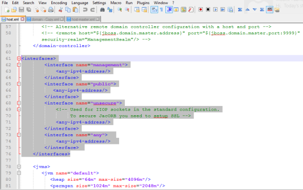

Application Servers Pre-Installation Tasks
JBoss
Configure Load Balancer as Proxy in JBoss Multinode Setup (Optional if SSL Offloading at Load Balancer)
-
Navigate to your Volt MX Foundry install directory and open the
domain.xmlfile. -
In the
domain.xml, update all thehttp connector tagsto include the scheme and proxy-port details.For example,
`<connector name="http" protocol="HTTP/1.1" scheme="https" socket-binding="http" proxy-name="loadbalancer hostname" proxy-port="443" secure="true"/>`
Update Listen Interfaces in host.xml for JBoss Cluster
For JBoss domain mode installation, configure the following interface address.
- Go to
<JBOSS EAP dir>/domain/configuration/host.xml - In place of existing
interfacesxml tag, replace the default content with below details:
<interfaces>
<interface name="management">
<any-ipv4-address/>
</interface>
<interface name="public">
<any-ipv4-address/>
</interface>
<interface name="unsecure">
<!-- Used for IIOP sockets in the standard configuration.
To secure JacORB you need to setup SSL -->
<any-ipv4-address/>
</interface>
<interface name="any">
<any-ipv4-address/>
</interface>
</interfaces>

Comment the javax-persistence-module for Volt MX Engagement Services on JBoss Cluster
If you are installing Volt MX Engagement Services on JBoss domain mode installation, comment the below persistence module in the domain.xml file.
- Go to
<JBOSS EAP dir>/domain/configuration/domain.xml - Comment the below
xmltag. Comment the persistence module at four places in thedomain.xmlfile.
<subsystem xmlns="urn:jboss:domain:jpa:1.1">
<jpa default-datasource="" default-extended-persistence-inheritance="DEEP"/>
</subsystem>
How to Configure Connector - JBoss
For importing an app to Volt MX Foundry Console properly, you must have set the enough value for the max-post-size in the standalone.xml file. For more details, refer to Configure Connectors - JBoss.
How to Increase Timeout and Maximum Heap Size Settings - JBoss
Restarting JBoss can cause deployment failures. To avoid these failures, you must increase the JBoss timeout and maximum heap size settings for cluster.
To increase memory and timeout settings in JBoss (pre-configured JBoss), follow these steps:
- In the
standalone.bator.shfile, add the following properties toJava_opts:
\-Djboss.as.management.blocking.timeout=8400
\-Xms2048m
\-Xmx4096m
- In the
<JBoss_Home>/standalone/configuration/standalone.xmlfile, addconfig deployment-timeout=”8400”in thedeployment-scanner subsystem, shown below:
<subsystem xmlns="urn:jboss:domain:deployment-scanner:2.0">
<deployment-scanner path="deployments" relative-to="jboss.server.base.dir" scan-interval="5000" deployment-timeout=”8400” runtime-failure-causes-rollback="${jboss.deployment.scanner.rollback.on.failure:false}"/>
</subsystem>
To increase memory and timeout settings in JBoss Multinode, follow these steps:
- In the
domain.bator.shfile, add the following properties toJava_opts:
\-Djboss.as.management.blocking.timeout=8400
- Set the heap size for the selected server groups as below in the
<JBoss_Home>/domain/configuration/domain.xml.- Search for
<server-groups>tag in the domain.xml and set the heap size in the JVM settings.
- Search for
<heap size="2048m" max-size="4096m"/>
How to Configure Engagement Services - JBoss
When Engagement is selected as Foundry Component, based on the selected JBoss mode, you must add the following parameter in the JVM arguments present in standalone.bat/domain.bat( for Windows) or standalone.sh/domain.sh(for Unix):
\-DVMS\_CORE\_VERSION=2